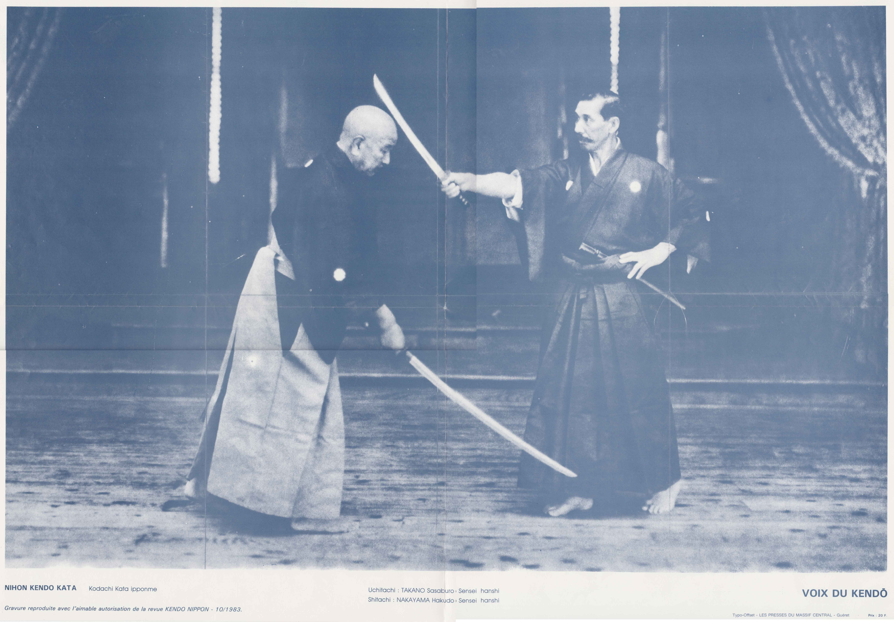
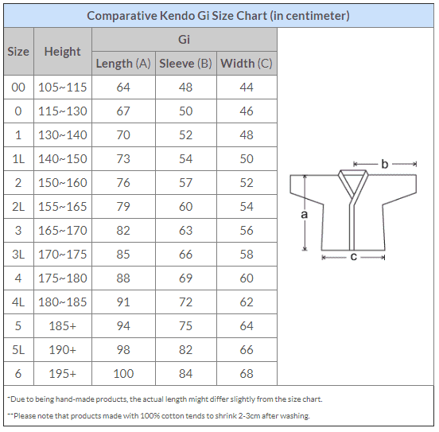
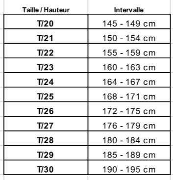
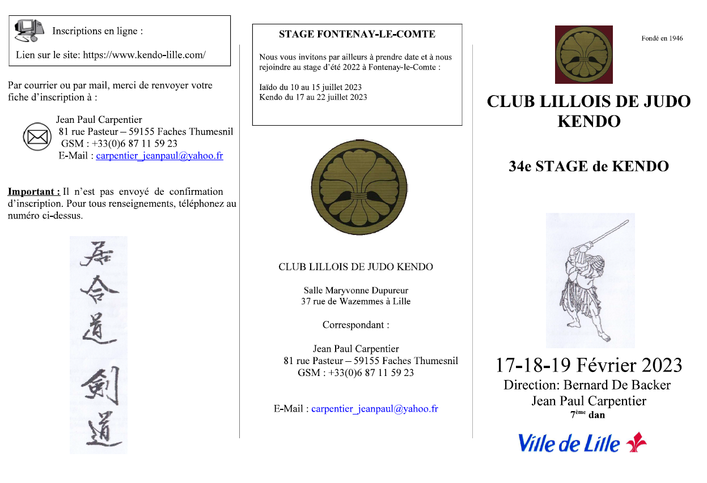
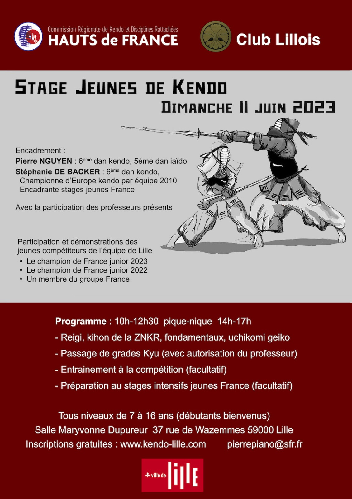

Kendo
Professeur: Jean Paul CARPENTIER
7ème Dan
Mardi : de 18h00 à 18h30 Kata et de 18h30 à 20h00 cours Adultes et enfants
Mercredi : gikeiko à partir de 19h00
Jeudi : cours de 12h00 à 13h30 et de 18h00 à 20h00 cours Adultes et enfants
Vendredi : cours de 12h00 à 13h30
Samedi : de 17h30 à 19h00 : pratique libre (gikeiko)
Dimanche : cours de 11h00 à 12h30 : Adultes et enfants
Jour férié : de 11h00 à 12h30 : pratique libre
Les cours durant les vacances sont toujours maintenus, les cours des jours fériés sont annulés à l’horaire habituel et remplacés par gi keiko libre de 11h00 à 12h30. Les seules exceptions sont pour les jours de Noël et nouvel an.
Contact : Mr CARPENTIER ---------
Le Kendo est l’escrime japonaise (pratiquée anciennement par les Samouraï) où les combattants sont revêtus d’une armure de protection et armés d’un shinaï (sabre en bambou). En parallèle, des exercices au boken (sabre en bois) et au iaïto (réplique en métal du sabre réel) sont étudiés sous le nom de Koryu (pratiques anciennes).
L’équipement protecteur est prêté dans les premiers temps, dès que le pratiquant
est apte à les revêtir. Il ne faut savoir que le kendo se veut avant tout d’élever l’individu en reflétant la vraie nature du bushido et toute pratique doit s’efforcer de polir les vertus traditionnelles.
Chugi – Fidélité – Loyauté
Gi – Honneur – Rectitude – Décision Juste
Jin – Bienveillance – Générosité
Makoto – Honnêteté
Meiyo – Honneur
Rei – Respect – Courtoisie – Étiquette
Yu – Courage
Les frappes sont établies par l’intermédiaire des shinaïs, qui, s’ils sont bien entretenus, représentent un danger maîtrisé. Afin de limiter les risques d’accidents, nous tenons à rappeler la nécessité d’avoir 2 shinaïs en bon état à disposition et d’assurer l’entretien constant de ces derniers. En effet, une simple écharde peut représenter un désagrément certain pour les pratiquants qui se blessent avec. Il s’agit donc d’entretenir son shinaï avec un couteau spécialisé à cet effet ou du papier de verre afin de supprimer les ébarbures ou autres aspérités. Mais une brisure ou une fissure peut représenter un véritable danger pour celui qui porte l’utchi comme pour celui qui le reçoit. Il est donc impératif de
changer de shinaï si l’une d’entre elles apparaît (et parfois elles sont bien cachées) pendant un entraînement.Des ateliers de réparation de shinaï sont proposés une à deux fois par an sur le dojo.
Les katas sont une pratique liée au kendo, le kendo no kata (visible sur youtube)
consiste en l’apprentissage de scénarii visant à améliorer sa pratique et approfondir ses connaissances. A terme son apprentissage est indispensable pour l’obtention des grades (1er grade à présenter après 3 années de pratique). Il n’y a donc pas d’obligation à venir à 18h00 pour pratiquer les katas le mardi mais cela reste fortement conseillé de venir. Les katas se pratiquent aux boken et kodachi qui sont disponibles sur des sites spécialisés.

Nihon Kendo Kata par Jean-Pierre Raick – Pdf
La loi française interdisant de se déplacer avec ces armes (shinaï, boken et kodachi) à vue et en accès rapide, il sera également nécessaire d’acquérir une housse de transport.
Pour débuter, nous invitons les personnes intéressées à venir voir ou assister aux cours en priorité le mardi, le jeudi ou le dimanche, il faut se présenter aux enseignants présents 15 minutes avant le début des cours. Il n’est pas possible de faire de séances d’essais car sans inscription les pratiquants ne sont pas couverts par les assurances. Il est possible de s’inscrire sur le Dojo auprès de M.Carpentier le trésorier du club et enseignant de kendo, il est possible de payer en plusieurs fois.
Chacun peut venir aux séances comme cela lui convient en terme d’organisation personnelle. Tous les cours sont ouverts aux débutants de 7 à 107 ans et les enseignants s’occupent spécifiquement d’eux à chaque séance.
Pour débuter en Kendo un survêtement ou un kimono de judo peuvent être suffisants, cependant le hakama (pantalon) et le keigogi (veste) se trouvent sur internet pour un prix très raisonnable, de plusnous avons du matériel usagé que nous prêtons et vendons à bon prix s’il est disponible. Les tableaux de taille sont disponibles sur le site internet du club, les dimensions sont des standards qui permettront de commander votre matériel neuf sur tout site commercial approprié. Quand le niveau le permet nous prêtons et vendons également men, do, tare et kote en fonction du matériel disponible. Il est possible
d’acheter tout le matériel neuf auprès d’un professionnel qui fait parti du club.
Nous pouvons également prêter le shinai (sabre en bambou) mais nous invitons les nouveaux pratiquants à en acquérir un très rapidement auprès des membres du club ou sur le net car ceci est personnel mais surtout il doit être entretenu par chacun pour des raisons de sécurité. Pour mémoire, le Kendo est un art martial de semi-contact.
Des informations complémentaires sont disponibles sur le site: tarifs, horaires, calendriers, adresse, vie associative, etc.
Nous vous invitons à vous inscrire sur la newsletter sur ce site afin de recevoir les différentes informations importantes envoyées durant la saison.
Bienvenue et à bientôt.
CLUB LILLOIS DE JUDO KENDO

Hakama


